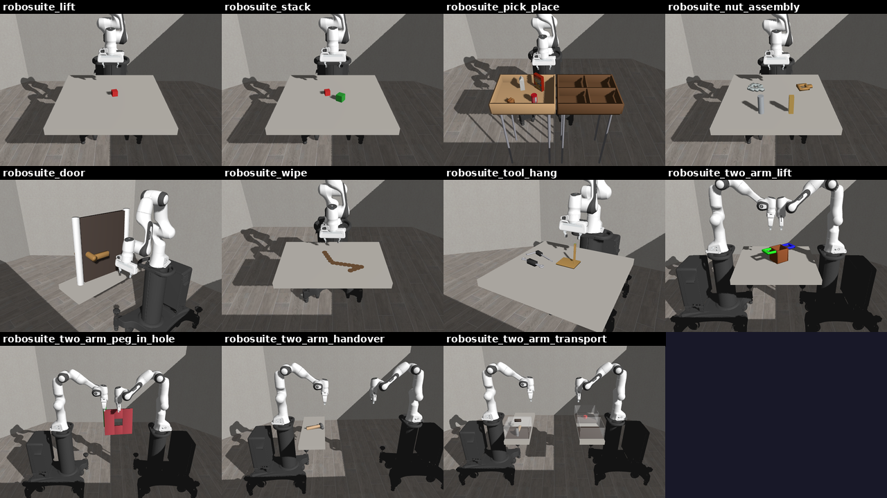

robosuite¶
Eden ports the eleven manipulation tasks of robosuite (MIT) as
registered RL tasks. Read this page to train or evaluate on them, to swap the robot, or to know exactly where a
port differs from the original. The code is in eden/tasks/robosuite/.

The tasks¶
Each task is one robosuite_<task> config in eden/tasks/robosuite/<task>/config.py. The arena, the robot
placement, the object placement ranges, the dense-reward multipliers and the success predicates follow robosuite's
numbers. The module docstring of each config lists those numbers and every deviation for that task.
Task (--task) |
robosuite source | Extra flags | Dense reward |
|---|---|---|---|
robosuite_lift |
Lift |
robosuite's | |
robosuite_stack |
Stack |
robosuite's | |
robosuite_pick_place |
PickPlace, PickPlaceMilk / Bread / Cereal / Can |
--object {all,milk,bread,cereal,can} |
robosuite's |
robosuite_nut_assembly |
NutAssembly, NutAssemblySquare / Round |
--nut {both,square,round} |
robosuite's |
robosuite_door |
Door (use_latch) |
--latch {latch,no_latch} |
robosuite's |
robosuite_wipe |
Wipe |
robosuite's | |
robosuite_tool_hang |
ToolHang |
Eden's (robosuite's is sparse) | |
robosuite_two_arm_lift |
TwoArmLift |
--arrangement {opposed,parallel} |
robosuite's |
robosuite_two_arm_peg_in_hole |
TwoArmPegInHole |
--arrangement {opposed,parallel} |
robosuite's |
robosuite_two_arm_handover |
TwoArmHandover |
--arrangement {opposed,parallel} |
robosuite's |
robosuite_two_arm_transport |
TwoArmTransport |
--arrangement {opposed,parallel} |
Eden's (robosuite has none) |
Every task also takes --robot (see Swapping the robot). The flags are TaskMods, so
eden train --task <task> --help lists them with their choices; see Task mods.
--objectand--nutare robosuite'ssingle_object_mode=2variants: the other objects and every term that names them are removed (eden.tasks.robosuite.variants.drop_object), and success narrows to the kept object.--latch latchis robosuite'suse_latch=True: a sprung handle whose bolt holds the door shut until the handle turns past about 1.25 rad, so it is the harder variant.no_latchloads the bare-handledoor.xml.--arrangementis robosuite's two-armenv_configuration:opposedfaces the arms across the workspace,parallelstands them side by side facing +x. A non-default arrangement suffixes the experiment name.- robosuite's
PickPlaceSingleandNutAssemblySinglepick a random object at every reset. They have no counterpart: a config fixes its entities, and swapping an entity per reset is not expressible in one.
ToolHang and TwoArmTransport have no dense reward in robosuite (robosuite ignores reward_shaping=True for
TwoArmTransport), so every shaping term in those two configs is Eden's. Their success terms (success and
transported) are robosuite's predicates, check for check, so success rates are comparable; returns are not.
Train, evaluate and build¶
eden train --task robosuite_lift
eden train --task robosuite_lift --robot droid # another arm + gripper
eden train --task robosuite_door --latch no_latch
eden inference --task robosuite_lift --checkpoint <path/to/checkpoint.pt>
Every task trains 4096 envs by default (common.robosuite_env_options) with one shared PPO recipe
(common.ppo_runner_options, 3000 iterations). See Training runs for where logs and
checkpoints land and how to resume.
To build an env in Python, pass the TaskMod flags as keyword arguments to TASK_REGISTRY.build:
import eden
from eden.envs.base import RLEnvBase
from eden.tasks import TASK_REGISTRY
eden.init()
config = TASK_REGISTRY.build("robosuite_stack", robot="droid")
env = RLEnvBase.from_config(config)
env.build()
observations, _ = env.reset()
The MDP¶
Timing. robosuite steps MuJoCo at 500 Hz and its policy at 20 Hz. Eden keeps the 20 Hz control rate over a
5 ms Genesis step with 2 substeps (decimation=10, from eden.tasks.robosuite.common.robosuite_env_options).
Actions. Per arm, 7-D: a 6-D delta end-effector pose and a binary gripper, as robosuite's OSC_POSE + GRIP.
The pose delta is a DifferentialIKController with robosuite's per-step limits (5 cm and 0.5 rad); the gripper is a
BinaryJointController. The terms are keyed <slot>_arm and <slot>_gripper (robot_arm / robot_gripper on
the single-arm tasks). TwoArmPegInHole has no gripper action, as in robosuite.
Observations. robosuite's proprioceptive set per arm (joint sin/cos and velocities, eef_pos, eef_quat,
gripper positions and velocities) plus, per object, <obj>_pos, <obj>_quat and gripper_to_<obj>. A policy
group carries 0.5 cm uniform noise on the object poses; a critic group has the same terms uncorrupted
(common.policy_and_critic).
Resets. Each arm's joints get robosuite's initialization noise (robosuite samples N(0, 0.02) per joint; Eden
uses the uniform half-width ±0.02), and objects are placed in robosuite's ranges.
Where the ports differ from robosuite¶
All of these are deliberate. Each config's module docstring lists the task-specific ones.
- Episode length. robosuite runs 1000 steps (50 s). Eden defaults to 10 s
(
eden.tasks.robosuite.common.EPISODE_LENGTH_S). For parity, pass--override 'env_options: {episode_length_s: 50}'. - Reward composition. robosuite returns the success reward instead of the shaping terms (or the
maxof its staged rewards). Eden sums separate terms, weighted by robosuite's multipliers. The ordering of states is the same (a solved state always beats an unsolved one); the absolute scale is not robosuite's. - Fixed object sizes. robosuite resamples cube, peg and hammer dimensions on every hard reset. Genesis builds geometry once, so each task fixes them at the midpoint of robosuite's range.
- Placement without rejection sampling. Where robosuite draws several objects from one region and rejects
overlaps, each object gets its own sub-region (for example, each
PickPlaceobject spawns in its own quadrant ofbin1). - Early termination. An object that falls below the table ends the episode (
common.fallen_termination). robosuite only terminates on the horizon, except inWipe. - Stiffer contacts on what a hand carries. In
ToolHangandTwoArmTransportthe objects a hand picks up carry a 0.005 s contact time constant (common.GRASPED_SOL_PARAMS) instead of Genesis' 0.02 s default. At the default, the 20 N pinch sinks the pads millimetres into a 3 cm handle and the object turns or creeps out of the fingers. The objects are stiffened, not the pads, so every other task's contacts are unchanged. - robosuite's Panda gripper. The default rig's Franka Hand gets robosuite's
PandaGripperactuation: kp 1000 clipped to ±20 N, no velocity gain, joint damping 100, armature 1, friction loss 1, pad friction 2 (eden.tasks.robosuite.rigs). Eden's stockFrankaHandcloses with at most 4 N per finger, which cannot lift robosuite's 0.25 kg lid. - The delta-pose action acts at the flange, not between the fingers. robosuite's
OSC_POSEcontrols the end-effector site between the fingers. The ports run differential IK on the rig'see_link, the arm's mounting flange, which is the gripper'stcp_offsetbehind it (10.3 cm on the Franka Hand, 14.1 cm on a Robotiq 2F-85). Translations match; a pure-rotation action sweeps the fingertips through an arc of up to0.5 rad × tcp_offset(about 5 cm) where robosuite turns them in place. Theeef_posobservation is the pad midpoint, as robosuite's is. Moving the control point would change the action space of every task and checkpoint, so it is kept as a documented deviation. - One frame for every object reading. Genesis re-origins a free rigid body onto its centre of mass, and the
root-pose getters default to that frame. Every object quantity in these ports (the
<obj>_pos/<obj>_quatobservations,gripper_to_<obj>, the reaching rewards, the lift and containment metrics, the fallen-object terminations and the placement events) reads the frame the asset was authored in (relative=True), which is the frame robosuite'sobject-statereports. The two differ by 6.8 cm on the hammer and 5.8 cm on the ToolHang frame, and the offset rotates with the object. Object pose observations go throughcommon.object_pose_observations()so the choice is made in one place. - TwoArmPegInHole's objects are held, not flange-mounted. robosuite builds those robots without grippers and
mounts the peg and the plate on the bare flange. Eden's rigs keep their grippers, so the mounting poses are
re-based on each rig's tool point (
ManipulatorOptions.tcp_offset) and the fingers start closed on the object (ManipulatorOptions.preset_hold). The peg and hole geometry the reward reads is unchanged. - Wipe. robosuite's rigid wiping pad is replaced by the rig's two-finger gripper (its action slot stays); robosuite's 100 markers 5 mm apart become 16 markers 3 cm apart, each a scene entity; a marker counts as wiped when the grasp point passes within 2 cm horizontally and 3 cm vertically. The contact-count bonus and the summed reward's normalisation are dropped.
Swapping the robot¶
Every robot slot holds a ManipulatorOptions composite: an arm and a welded two-finger
gripper, expanding into <slot> and <slot>_gripper entities at build. The default is panda_franka_hand
(PandaFrankaHand: the hand-less Panda plus the FrankaHand), robosuite's own robot at robosuite's home pose.
--robot takes any arm + two-finger-gripper composite in COMPOSITE_ROBOT_REGISTRY; today that is
panda_franka_hand, droid, ur5e_2f85 and ur10e_2f85.
Swapping is a scene edit. Every robot-shaped term names only its slot and reads the arm, the gripper, the mount
link, the pad links and both DOF lists off the composite in build(). RobosuiteRobotMod replaces the composite
in each slot, retargets the <slot>_arm and <slot>_gripper action terms, refits the substep and suffixes the
experiment name. The new arm stands where the Panda stood.
A Robotiq rig raises sim_substeps
A gripper whose MJCF encodes a closed loop declares the coarsest substep it stays stiff at
(RobotOptions.max_substep_dt; the Robotiq 2F-85's is 1 ms, because Genesis clamps a solref time constant
to 2 × substep_dt). Swapping in such a rig raises sim_substeps from 2 to 5
(common.fit_substeps_to_rigs, logged at info level). That costs 2.5× the physics per step; the alternative
is a gripper that silently cannot hold anything.
Checkpoints do not transfer across robots
The observation width follows the arm's DOF count, so a policy trained on one rig does not load on another.
A new rig needs only a ManipulatorOptions registration in COMPOSITE_ROBOT_REGISTRY whose gripper declares a
tool point and a stroke (RobotOptions.tcp_offset / stroke); it then appears in --robot automatically.
Scripted demonstrations¶
eden datagen has a demonstrator for seven of the tasks: robosuite_lift, robosuite_stack,
robosuite_pick_place, robosuite_door, robosuite_wipe, robosuite_tool_hang and
robosuite_two_arm_transport (eden/tasks/robosuite/scripted_demos.py). robosuite_pick_place can also run
camera-only, locating the objects through the agentview camera:
eden datagen --task robosuite_tool_hang --num_envs 16 --num_episodes 32 --output_dir data/demos
eden datagen --task robosuite_pick_place --camera_only
What each demonstrator does and its measured success rates are in Scripted demonstrations.
Assets¶
The objects are the option classes of eden.options.objects.robosuite (RobosuiteCan, RobosuiteSquareNut,
RobosuiteDoor, RobosuitePotWithHandles, ...), registered in ROBOSUITE_OBJECT_REGISTRY under robosuite's names,
plus the RethinkMount pedestal every arm stands on. Their files are robosuite's own object MJCFs, meshes and
textures, and MJCFs re-authored from robosuite's procedural composites. They download on first use from the
Kashu7100/eden_robosuite dataset into robosuite/
under the asset directory; a local copy there wins. See Assets.
The arena looks like robosuite's: every scene carries LIBERO's floor workspace (robosuite's arena MJCF, the
6 × 6 m tiled floor and six visual walls, from the eden_libero dataset) as a kinematic entity, over an invisible
plane that provides the ground collision (common.arena_entities).
Genesis' MJCF loader differs from MuJoCo in ways that would leave every object grey or broken, so each option
derives a Genesis-ready copy at load time (resolve_runtime_file; the transforms are in
eden.options.objects.mjcf_transforms). The serialized file keeps naming the source, so saved configs stay
portable. The transforms:
- unwrap robosuite's wrapper body, and add or strip the root free joint to follow
is_fixed_base; - give every collision geom a visual-only twin carrying its material (Genesis draws collision geoms with a grey proxy surface);
- replace
cubetextures, which Genesis cannot map onto geoms without texture coordinates, with the material's mean colour; - declare radians: robosuite's object files have no
<compiler>element, so loaded on their own their angles compile as degrees (the door's hinge range0 0.4became 0.4 degrees and the door could not open).
See also¶
- Task suites overview
- LIBERO, which shares robosuite's arena and controller conventions
- Scripted demonstrations
- Robots for
ManipulatorOptionsand the composite registry